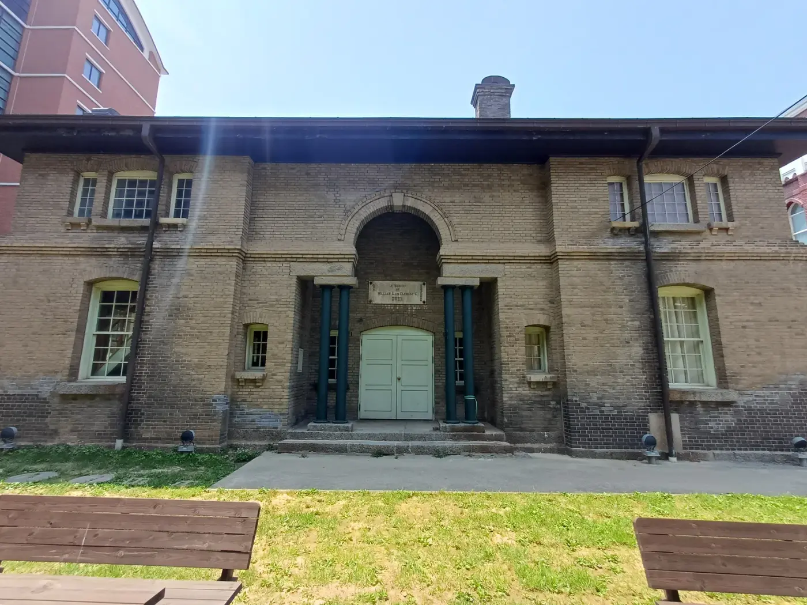
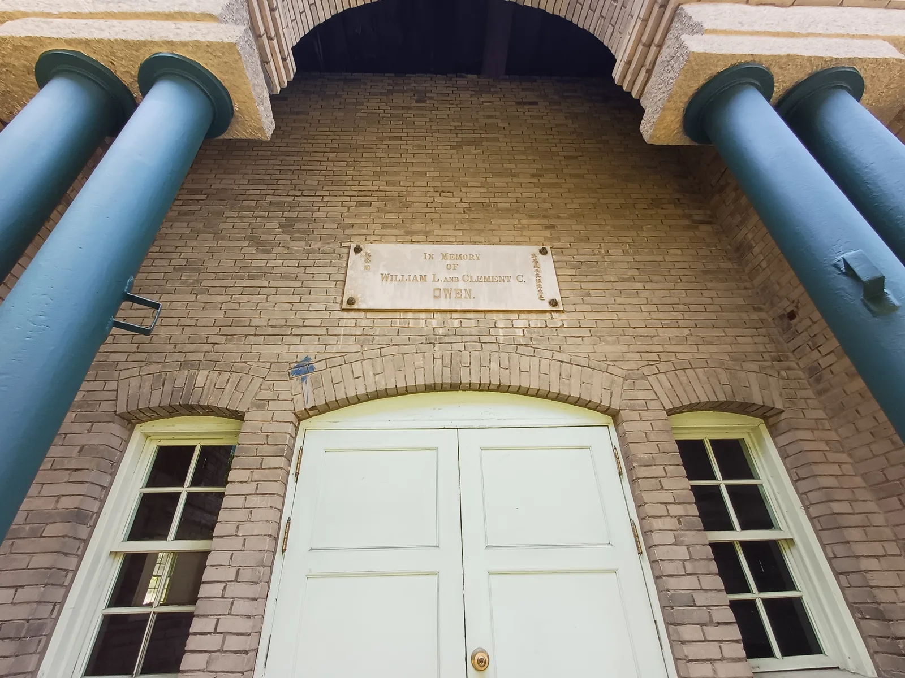
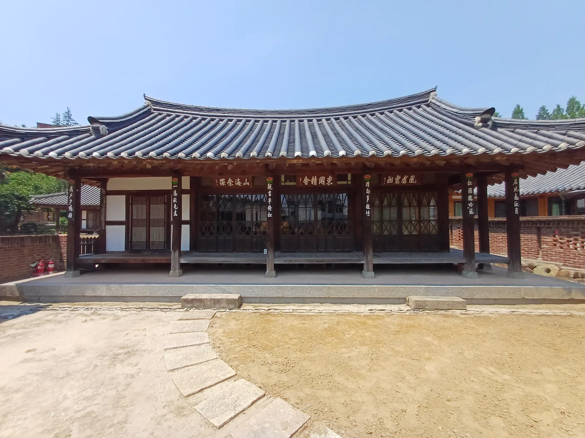
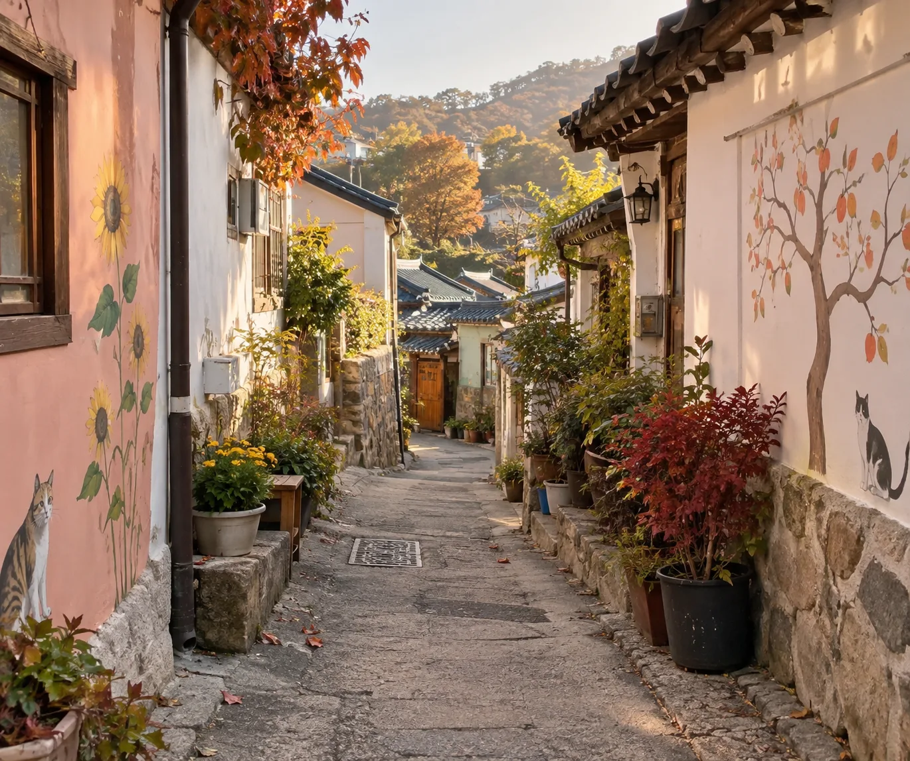
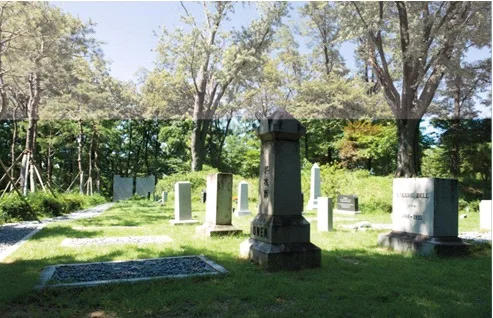
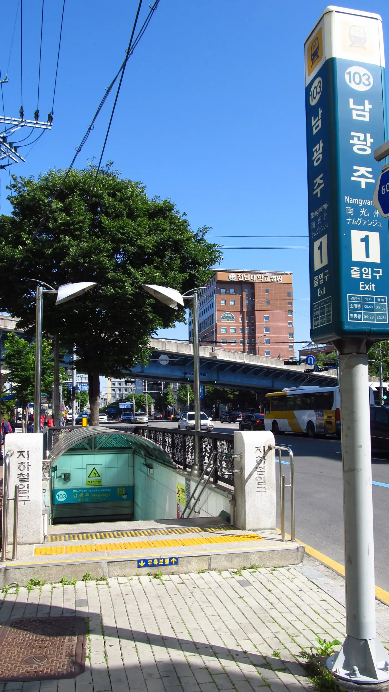
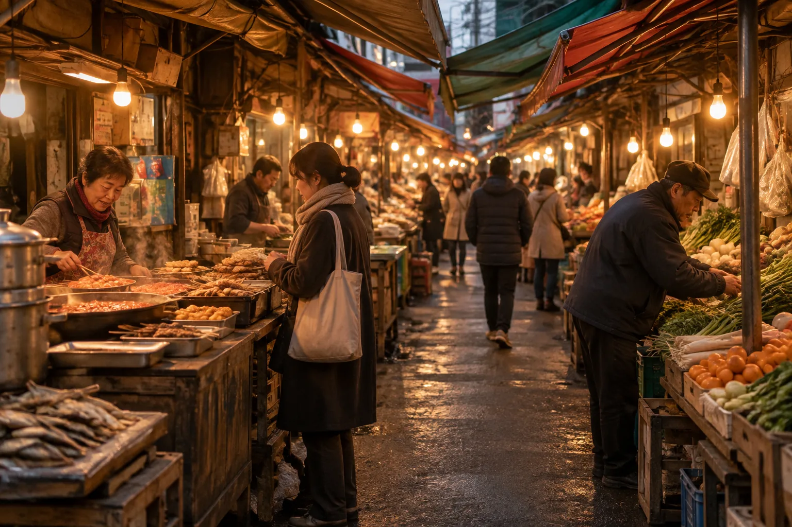
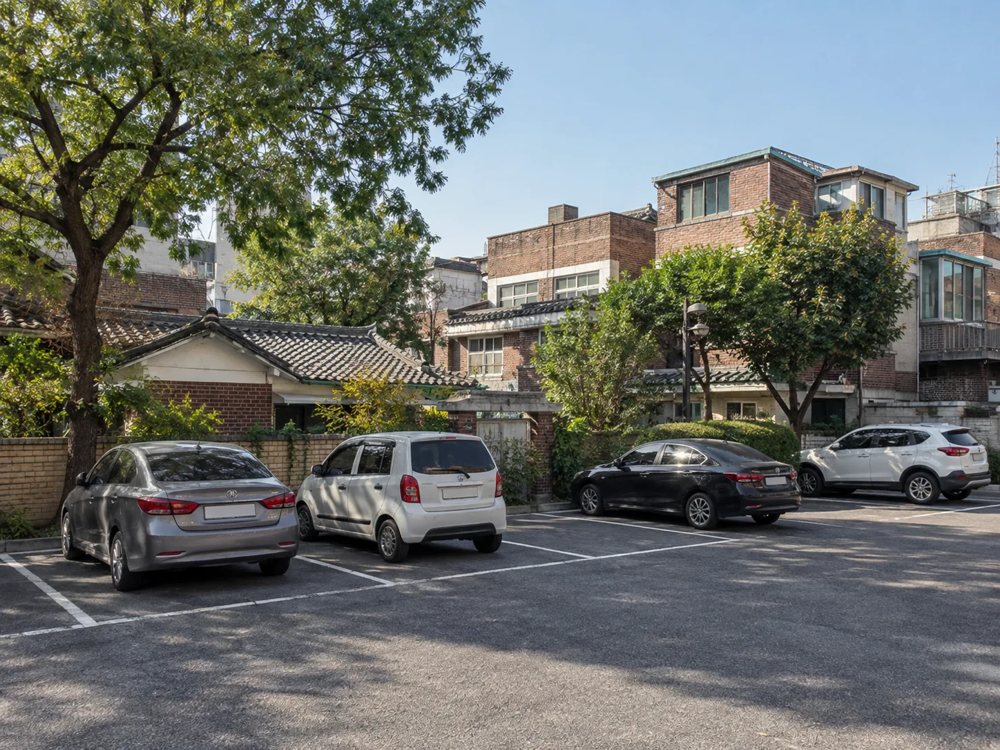

▲ 광주 양림동에 남아 있는 옛 서양식 선교사 사택 건물. 양림동은 20세기 초 선교사들이 정착하며 '서양촌'이라 불렸다 사진=Wikimedia Commons (Htus, CC BY-SA 4.0)
1. 선교사 골목에서 100년 시장까지, 오늘의 동선
광주 남구 양림동은 20세기 초 미국 선교사들이 교회·학교·병원을 세우며 '광주의 예루살렘', '서양촌'이라는 별명을 얻은 동네다. 사직산과 양림산 자락 0.68㎢ 남짓한 동네 골목에 한옥과 서양식 벽돌 건물이 뒤섞여 있고, 그 사이 좁은 골목 하나는 '펭귄마을'이라는 이름의 공예거리로 변신해 있다. 여기서 차로 도심을 가로질러 광산구 쪽으로 넘어가면 1913년 광주송정역과 함께 생긴 전통시장, 1913송정역시장이 나온다. 이번 기사는 양림동 근대역사문화마을과 펭귄마을을 걷고, 차로 이동해 1913송정역시장까지 묶는 하루 코스를 자가용 기준으로 정리했다.
참고로 2026년 7월 1일 광주광역시와 전라남도가 통합해 전남광주통합특별시가 출범하면서, 국가유산포털 등 공식 자료의 소재지 표기도 '전남광주통합특별시 남구', '전남광주통합특별시 광산구'로 바뀌었다. 지난주 다룬 광주 충효동 왕버들·광주호 호수생태원 기사에서도 짚었듯, 구(區) 이름과 경계 자체는 그대로이고 앞에 붙는 광역 명칭만 달라졌다. 이번 기사에 나오는 양림동은 남구, 1913송정역시장은 광산구다.
2. 양림동, 100년 넘은 '서양촌'을 걷다
양림동은 1904년 미국 남장로회 선교사들이 정착하며 교회·학교·병원을 세운 동네로, 광주에서 처음 서양 근대문물을 받아들인 곳으로 알려져 있다. 사직산과 양림산 능선 동남쪽 사면에 자리한 이 동네는 한옥과 서양식 벽돌 건물, 400년 넘은 호랑가시나무 같은 노거수가 뒤섞여 있어 마을 전체가 하나의 건축 역사박물관에 가깝다. 골목이 좁고 경사가 있는 구간이 많아, 차를 공영주차장에 세워두고 도보로 둘러보는 편이 현실적이다.
▲ 양림산 자락에 남아 있는 옛 서양식 선교사 사택 건물. 20세기 초 선교사들이 정착하며 양림동은 '서양촌'이라 불렸다 사진=Wikimedia Commons (Htus, CC BY-SA 4.0)
동네 중심에는 우일선(우월순) 선교사 사택이 있다. 국가유산포털에 따르면 이 건물은 1989년 3월 20일 광주광역시 기념물 제15호로 지정됐고(현재 전남광주통합특별시 기념물), 소재지는 남구 제중로47번길 20(양림동)이다. 미국인 선교사 로버트 M. 윌슨(한국명 우월순, 흔히 '우일선'으로도 불린다)이 지은 2층 벽돌 건물로, 현재 광주에 남아 있는 서양식 건물 중 가장 오래된 것으로 알려져 있다. 윌슨은 장애 아동과 고아를 돌보고 한센병(나병) 치료에 앞장선 것으로 전해진다. 건물은 호남신학대학교 소유이며, 현재 내부는 종교단체 사무 공간 등으로 쓰이고 있어 외부에서 둘러보는 정도만 가능하다.
3. 오웬기념각과 이장우가옥 — 선교와 한옥이 나란히
오웬기념각은 전남지역 최초의 선교사 중 한 명으로 광주에서 활동하다 순교한 클레멘트 C. 오웬(한국명 오기원)과 그 조부를 기려 1914년 세워진 2층 벽돌 건물이다. 국가유산포털 기준 소재지는 남구 백서로70번길 6(양림동)이며, 1998년 5월 7일 광주광역시 유형문화유산 제26호로 지정됐다(현재 전남광주통합특별시 유형문화유산). 현재는 기독간호대학교 캠퍼스 안에 있고, 소유는 학교법인 광주기독병원교육재단, 관리는 광주광역시 남구가 맡고 있다. 강당으로 지어진 건물답게 객석에서 설교단을 내려다보도록 바닥과 발코니가 살짝 경사진 독특한 구조다. 지금도 대학 강당이자 음악회·연극 같은 지역 문화행사 장소로 쓰이고 있어, 내부 관람은 대학 측 일정·방침에 따라 달라질 수 있다. 캠퍼스 안에 있는 만큼 방문 전 대학 측에 확인하는 게 안전하다.

▲ 1914년 세워진 오웬기념각. 순교한 선교사 오웬과 그 조부를 기리는 명판이 출입구 위에 걸려 있다 사진=Wikimedia Commons (Kimge2020, CC BY 4.0)

▲ 오웬기념각 출입구의 기념 명판. 오웬 형제를 기리는 영문 문구가 새겨져 있다 사진=Wikimedia Commons (Kimge2020, CC BY 4.0)
같은 동네에는 전통 한옥인 이장우가옥도 있다. 국가유산포털에 따르면 1899년 지어진 이 가옥은 1989년 3월 20일 광주광역시 민속문화유산 제1호로 지정됐고(현재 전남광주통합특별시 민속문화유산), 소재지는 남구 양촌길 21(양림동)이다. 서양식 근대 건축과 달리 사랑채·안채로 이뤄진 조선식 가옥으로, 개인 소유 주택인 만큼 안채 내부까지는 관람이 제한적일 수 있어 방문 전 확인을 권한다. 선교사들의 서양식 건물과 전통 한옥이 한 골목 안에 나란히 있다는 점이 양림동 산책의 가장 큰 특징이다.

▲ 이장우가옥의 사랑채. 처마 밑으로 한자 현판이 줄지어 걸려 있다 사진=Wikimedia Commons (Kimge2020, CC BY 4.0)
4. 뒤뚱뒤뚱 펭귄마을, 낡은 골목이 예술이 되다
펭귄마을 공예거리는 양림동 주민센터 뒤편, 펭귄 모양 이정표를 따라 들어가는 좁은 골목이다. 무릎이 불편해 뒤뚱뒤뚱 걷던 한 주민의 걸음걸이에서 마을 이름이 유래했다고 전해진다. 주민들이 버려진 살림살이와 옛 물건을 모아 골목 담벼락에 전시하기 시작하면서 1970~80년대 풍경이 그대로 남은 야외 전시장이 됐고, 지금은 가죽·섬유·목공 공방이 들어서 업사이클링 공예 체험도 함께 운영한다.
광주광역시 관광 공식 정보 기준 주소는 남구 오기원길 20-13, 운영시간은 화요일~일요일 10:00~18:00(월요일 휴무)다. 문의는 062-674-5707·5708. 골목 자체는 상시 개방된 옥외 공간이라 운영시간 외에도 지나며 구경할 수 있지만, 공방 체험을 하려면 운영시간에 맞춰 가는 게 좋다.

▲ 담벼락에 그림이 그려지고 화분이 늘어선 옛 동네 골목 분위기. 펭귄마을도 이런 좁은 골목을 따라 조성돼 있다 이미지=AI 생성
양림산 자락에는 초기 선교사와 가족들이 묻힌 묘원도 남아 있다. 오웬을 비롯한 여러 선교사의 묘비가 나무 그늘 아래 늘어서 있어, 근대역사문화마을 산책의 마지막 코스로 들르기 좋다.

▲ 양림산 기슭의 선교사 묘원. 오웬을 비롯한 초기 선교사들의 묘비가 남아 있다 사진=Wikimedia Commons (Htus, CC BY-SA 4.0)
5. 양림동 도보 동선과 주차
양림동은 골목이 좁고 일방통행 구간이 많아 차로 구석구석 들어가기보다, 공영주차장에 차를 세우고 걷는 편이 낫다. 양림동 관광안내소 인근 양림역사문화마을 공영주차장이 대표적인 주차 지점으로, 2시간 무료 이후 요금이 붙는 것으로 알려져 있다(정확한 요금·정기휴무는 방문 전 재확인 권장). 도보로는 우일선 선교사 사택·오웬기념각·이장우가옥·펭귄마을·선교사 묘원을 30분~1시간 안팎에 돌아볼 수 있는 거리다. 대중교통을 이용한다면 광주도시철도 1호선 남광주역에서 도보 약 10분 거리다.

▲ 광주도시철도 1호선 남광주역 1번 출입구. 양림동 근대역사문화마을까지 도보 약 10분 거리다 사진=Wikimedia Commons (LERK, CC BY-SA 4.0)
| 지점 | 소재지 | 참고 |
|---|---|---|
| 우일선(우월순) 선교사 사택 | 남구 제중로47번길 20 | 전남광주통합특별시 기념물 제15호, 광주 최고(最古) 서양식 건물, 외부 관람만 가능 |
| 오웬기념각 | 남구 백서로70번길 6 | 1914년 건립, 유형문화유산 제26호, 기독간호대학교 캠퍼스 내(내부 관람 대학 방침 따름) |
| 이장우가옥 | 남구 양촌길 21 | 1899년 건립, 민속문화유산 제1호, 사랑채·안채 |
| 펭귄마을 공예거리 | 남구 오기원길 20-13 | 화~일 10:00~18:00, 월요일 휴무 |
| 선교사 묘원 | 양림산 일원 | 초기 선교사·가족 묘비 다수 |
📍 방문 전 확인할 것
펭귄마을·이장우가옥 등 개별 공방·전시 공간은 정기휴무나 임시 휴관이 있을 수 있다. 겨울철 골목은 응달이 많아 결빙 구간이 생기기 쉬우니 신발과 보행에 유의할 것. 내비게이션에는 도로명 주소를 입력하는 편이 정확하다.
6. 차로 이동해, 1913송정역시장으로
양림동에서 차로 도심을 가로질러 북서쪽으로 이동하면 전남광주통합특별시 광산구에 있는 1913송정역시장에 닿는다. 도로 상황에 따라 소요 시간 차이가 크므로, 출발 전 내비게이션으로 실시간 경로를 다시 확인하는 것을 권한다. 시내 구간을 통과하는 경로라 출퇴근 시간대에는 정체가 있을 수 있고, 호남고속도로·서부순환로 등 외곽 도로를 타는 경로도 있다.
▲ 양림동에서 1913송정역시장까지는 도심을 가로지르는 이동이다. 출발 전 실시간 경로를 확인하는 게 안전하다 이미지=AI 생성
1913송정역시장은 1913년 광주송정역이 들어서면서 함께 생긴 전통시장을 현대적으로 재단장한 곳이다. 100년 넘은 역사를 강조하기 위해 건물 리모델링은 최소화하고, 점포 바닥과 벽에 문을 연 연도를 새겨 넣었다. 200m 남짓한 길지 않은 구간이지만 7080년대 정서와 젊은 상인들의 활기가 섞여 있어 사진 찍기 좋은 골목으로도 알려져 있다. 도로명 주소는 광산구 송정로8번길 13이며, 광주송정역 2번 출구에서 도보 2분 거리다.
▲ 광주송정역. KTX·SRT가 정차하며, 2번 출구에서 도보 2분이면 1913송정역시장에 닿는다 사진=Wikimedia Commons (Minseong Kim, CC BY-SA 4.0)
7. 시장 먹거리와 주차, 그리고 계절 팁
시장 안에는 고로케·국화빵 같은 길거리 간식부터 떡갈비, 나주곰탕 같은 든든한 먹거리까지 늘어서 있다. 좁은 통로에 노점과 손님이 뒤섞이는 시간대(주말 오후)에는 이동이 더딜 수 있으니, 평일 오전이나 늦은 오후에 방문하면 한결 여유롭게 돌아볼 수 있다.

▲ 알전구와 천막 지붕이 이어진 전통시장 골목 풍경. 1913송정역시장도 이런 정취의 좁은 통로를 따라 가게가 늘어서 있다 이미지=AI 생성
자가용 이용 시에는 시장 옆 공영주차장(약 48면)을 이용하면 된다. 시장 이용객은 60분 무료로 알려져 있으며, 이후 요금과 만차 여부는 주말·연휴에 특히 달라질 수 있어 방문 전 확인이 필요하다. 시장 골목 자체는 차량 진입이 제한적이므로, 주차 후 도보로 둘러보는 게 기본이다.

▲ 옛 동네 옆에 마련된 소규모 공영주차장. 양림동과 1913송정역시장 모두 골목 초입의 공영주차장을 이용하고 걸어 들어가는 방식이 기본이다 이미지=AI 생성
계절 팁을 더하면, 양림동은 골목에 나무 그늘이 많아 여름엔 상대적으로 걷기 편하고 가을엔 담쟁이·감나무 단풍이 더해져 사진이 잘 나온다. 다만 낙엽이 쌓인 돌길·계단은 미끄러울 수 있어 주의가 필요하다. 1913송정역시장은 실내외가 섞인 구조라 한여름·한겨울에도 방문에 큰 무리는 없지만, 명절 연휴 전후로는 선물용 먹거리를 사려는 발길이 몰려 붐빌 수 있다.
✅ 출발 전 확인할 것
· 양림동은 양림역사문화마을 공영주차장(2시간 무료)에 세우고 도보로 이동
· 펭귄마을 공예거리는 화~일 10:00~18:00, 월요일 휴무
· 우일선 선교사 사택·이장우가옥은 외부 관람 위주, 오웬기념각은 대학 캠퍼스 내부 — 내부 관람 가능 여부는 방문 전 확인
· 1913송정역시장 공영주차장은 60분 무료, 주말엔 만차 가능성
· 양림동(남구)과 1913송정역시장(광산구) 모두 전남광주통합특별시 소속 — 내비게이션은 도로명 주소로
· 시내 구간을 지나는 이동이라 실시간 경로·소요시간은 출발 전 재확인